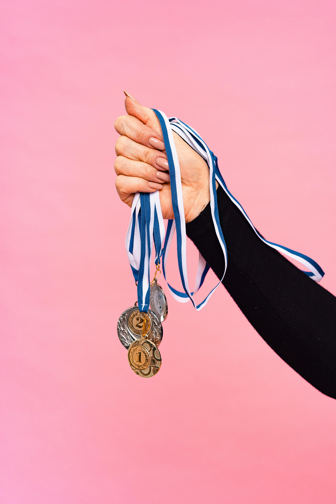

2024 Paris Olimpiyatları, muhteşem bir kapanış töreniyle sona erdi. Dünyanın dört bir yanından gelen sporcular, 17 gün boyunca yeteneklerini sergiledi ve ülkelerine madalyalar kazandırdı. Madalya tablosunda ise her zaman olduğu gibi büyük bir rekabet yaşandı. İşte 2024 Olimpiyatları’nda ülkelerin kazandığı madalya sayısına göre sıralaması:
| Ülke | Altın | Gümüş | Bronz | Toplam |
|---|---|---|---|---|
| ABD | 47 | 38 | 31 | 116 |
| Çin | 40 | 32 | 24 | 96 |
| Japonya | 30 | 28 | 17 | 75 |
| Büyük Britanya | 22 | 24 | 19 | 65 |
| Rusya | 21 | 19 | 23 | 63 |
| Almanya | 19 | 20 | 16 | 55 |
| Avustralya | 17 | 15 | 16 | 48 |
| Fransa | 15 | 16 | 14 | 45 |
ABD, 2024 Paris Olimpiyatları’nda bir kez daha zirvede yer aldı. Amerikan sporcular, toplamda 116 madalya kazanarak büyük bir başarıya imza attı. Bu madalyaların 47’si altın, 38’i gümüş ve 31’i bronz madalya olarak kaydedildi. Özellikle yüzme, atletizm ve jimnastik gibi branşlarda ABD'li sporcuların gösterdiği üstün performans, ülkenin madalya tablosunun zirvesinde yer almasını sağladı. Yüzme branşında Michael Phelps'in varisi olarak görülen genç yetenek Sarah Miller, 5 altın madalya kazanarak ülkesine büyük bir katkı sağladı.
Çin, 2024 Olimpiyatları'nda toplamda 96 madalya kazanarak ikinci sırada yer aldı. Çinli sporcular, 40 altın, 32 gümüş ve 24 bronz madalya ile büyük bir başarı elde etti. Çin, özellikle dalış, masa tenisi ve badminton gibi geleneksel olarak güçlü olduğu branşlarda rakip tanımadı. Dalışta, Çinli sporcular tüm altın madalyaları süpürerek bu alanda mutlak hâkimiyetini bir kez daha gösterdi.
Ev sahibi olarak 2020 Tokyo Olimpiyatları'nda büyük başarılar elde eden Japonya, Paris’te de güçlü bir performans sergileyerek 75 madalya kazandı. Japonya, 30 altın, 28 gümüş ve 17 bronz madalya ile üçüncü sırada yer aldı. Judo ve güreş gibi dövüş sporlarında Japon sporcular yine zirvede yer aldı. Ayrıca, karate ve kaykay gibi yeni branşlarda da Japon sporcuların elde ettiği başarılar dikkat çekti.
Büyük Britanya, toplamda 65 madalya kazanarak dördüncü sırada yer aldı. Britanyalı sporcular, 22 altın, 24 gümüş ve 19 bronz madalya ile büyük bir başarıya imza attı. Bisiklet, atletizm ve yelken gibi branşlarda Britanya, güçlü performansıyla öne çıktı. Bisiklet sporunda, Britanyalı sporcular özellikle pist ve yol yarışlarında üstün başarı gösterdi.
Rusya, 2024 Paris Olimpiyatları'nda toplamda 63 madalya kazandı. 21 altın, 19 gümüş ve 23 bronz madalya ile beşinci sırada yer alan Rus sporcular, güreş, eskrim ve artistik buz pateni gibi branşlarda başarı gösterdi. Ancak, Rusya’nın Olimpiyat Komitesi bayrağı altında yarışması, doping skandalları sonrası alınan uluslararası kararlardan kaynaklandı.
Almanya, Paris Olimpiyatları’nda toplamda 55 madalya ile altıncı sırada yer aldı. 19 altın, 20 gümüş ve 16 bronz madalya kazanan Alman sporcular, özellikle bisiklet, kürek ve atıcılık gibi branşlarda başarıya ulaştı. Alman sporcular, disiplinli çalışmaları ve güçlü takım ruhlarıyla öne çıktı.
Avustralya, 2024 Paris Olimpiyatları'nda 48 madalya kazanarak yedinci sırada yer aldı. Avustralyalı sporcular, 17 altın, 15 gümüş ve 16 bronz madalya ile su sporları, özellikle yüzme ve kürek branşlarında büyük başarı elde etti. Yüzme branşında Avustralyalı sporcular, ABD ile sıkı bir rekabete girerek birçok madalya kazandı.
Ev sahibi Fransa, Paris Olimpiyatları'nda 45 madalya kazanarak sekizinci sırada yer aldı. Fransız sporcular, 15 altın, 16 gümüş ve 14 bronz madalya kazandı. Judo, eskrim ve hentbol gibi geleneksel olarak güçlü olduğu branşlarda Fransa, ev sahibi avantajını iyi kullanarak önemli başarılara imza attı. Özellikle judo branşında, Fransız sporcuların aldığı altın madalyalar büyük yankı uyandırdı.